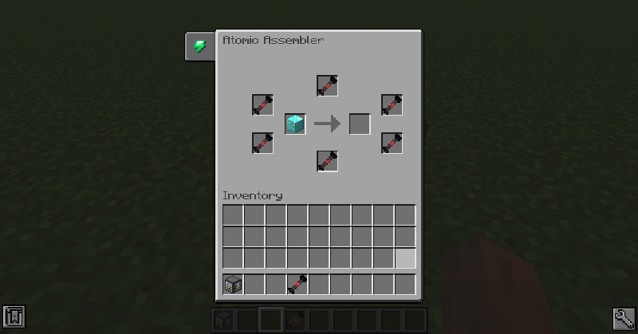
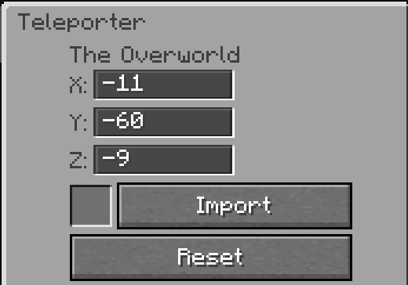
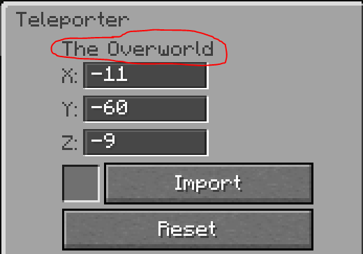

Autres machines
Assembleur atomique
Duplication d'items
L'assembleur atomique exploite les propriétés de la Matière noire pour dupliquer n'importe quel item. Les items avec inventaire ne peuvent pas être dupliqués.
| Paramètre | Valeur |
|---|---|
| Consommation | 72 kW à 480 V |
| Durée par duplication | 6 000 ticks (5 minutes) |
| Utilisations par cellule | 12 utilisations |
Utilisation : Placez l'item à dupliquer dans l'assembleur, puis entourez-le de Cellules de matière noire.

Perte de progression
Si l'assembleur perd son alimentation en cours de duplication, toute la progression est perdue. Assurez une alimentation stable.
Téléporteur
Le téléporteur transporte une entité d'un point à un autre. Il faut deux téléporteurs : un émetteur et un récepteur. Seul l'émetteur a besoin d'être alimenté.
| Paramètre | Valeur |
|---|---|
| Énergie par téléportation | 5 MJ |
| Délai de recharge | 4 secondes |
| Voyage aller-retour | Nécessite 2 téléporteurs |
Liaison : Entrez les coordonnées de destination directement dans l'interface, ou utilisez une Carte de fréquence pour importer des coordonnées via le bouton Importer.


Carte de fréquence
Faites un clic droit avec la carte sur un bloc pour stocker ses coordonnées. Shift + clic droit pour effacer. La carte peut aussi stocker la dimension — pratique pour les voyages inter-dimensions.
Chargeur de chunks
Le chargeur de chunks maintient une zone de 3×3 chunks centrée sur son chunk toujours chargée. Il ne nécessite aucune énergie pour fonctionner.
Utilité
Indispensable pour maintenir vos réacteurs actifs quand vous vous éloignez. Placez-en un près de chaque installation importante.